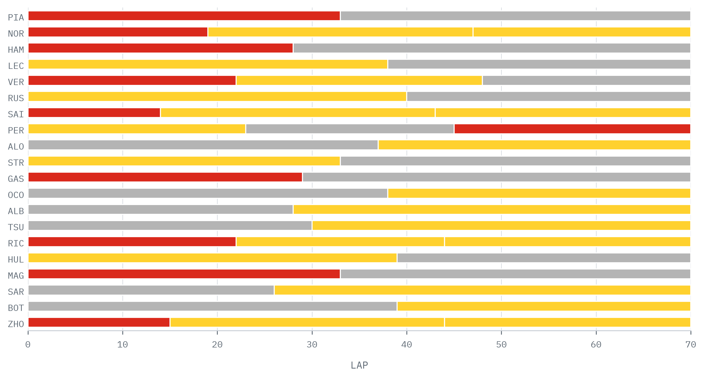
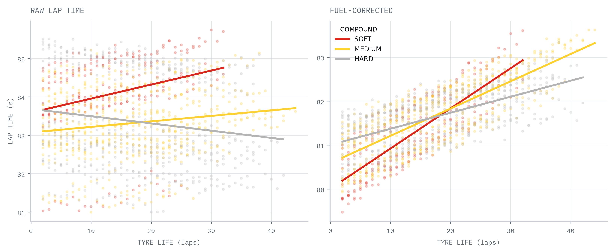
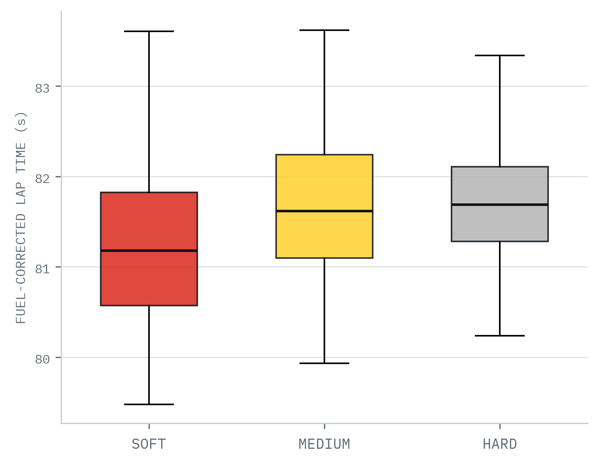
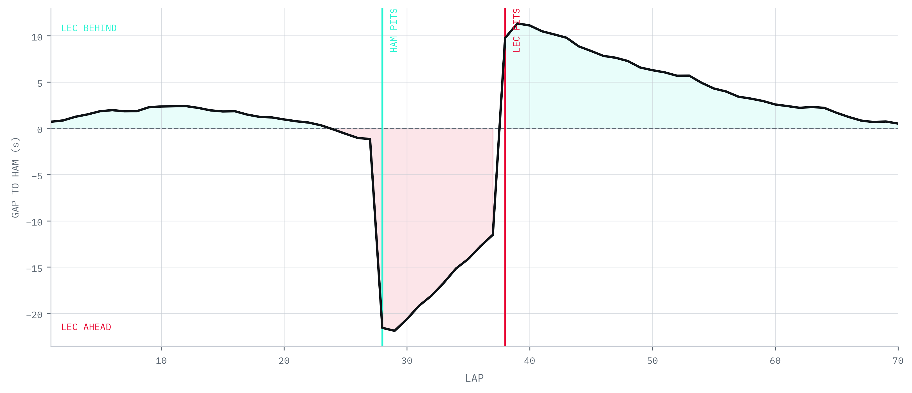
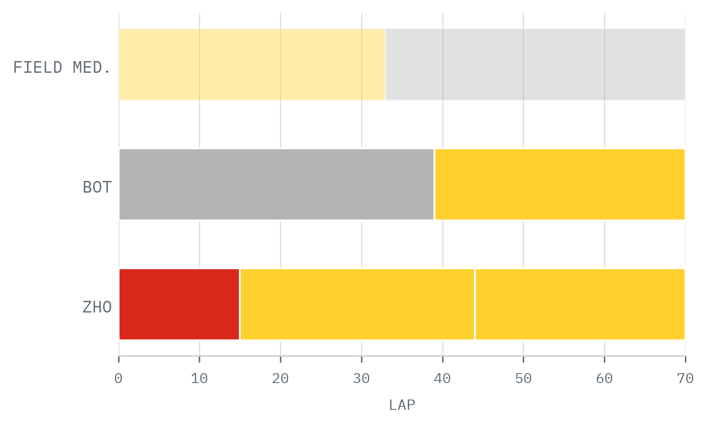
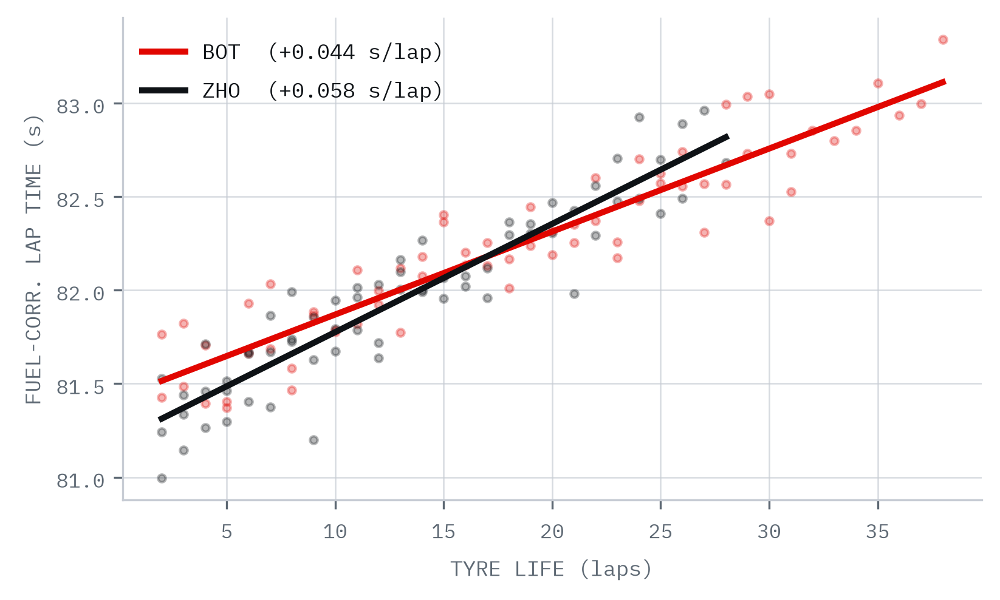

Piastri took the flag on a disciplined one-stop — a soft opening stint converted to track position, then a long hard stint managed to the end. At a circuit where overtaking is scarce, holding clean air mattered more than raw pace.
Only 6 of 20 cars committed to a two-stop. The majority mirrored the leader's one-stop, betting on track position over fresh-tyre pace — the safe, consensus play at the Hungaroring.
Verstappen and Norris took the aggressive route, stopping early for a short opening soft stint before two longer stints — trading clean air for two windows of fresh-rubber pace to attack from behind.
Pérez ran an unusual medium–hard–soft sequence, fitting a final soft set for a late charge — the only car carrying soft-tyre pace into the closing laps. The undercut battle this created is examined on pages 6–7.

| Compound | Deg Rate (s/lap) | Pace vs Hard (s) | Quicklaps |
|---|---|---|---|
| SOFT | +0.091 | −0.73 | 221 |
| MEDIUM | +0.062 | −0.29 | 601 |
| HARD | +0.037 | baseline | 506 |
The soft offered roughly 0.7 s of pace over the hard, but degraded almost 2.5× faster (0.091 vs 0.037 s per lap) — its advantage erodes within a handful of laps, making it viable only for short stints. The medium sits neatly between the two. This is exactly why the two-stoppers opened on a short soft burst before switching to harder, more durable rubber for the long stints.


Through the opening stint Hamilton and Leclerc ran nose-to-tail, never more than 1.5 s apart — Leclerc marginally ahead on mediums, Hamilton shadowing on softs. At a circuit where overtaking is near-impossible, the position would be settled in the pit window, not on track.
Mercedes blinked first, pitting Hamilton on lap 28 for fresh hards. He rejoined some 20 s down the road, but with a tyre-life advantage Ferrari could not answer: on worn mediums Leclerc was conceding over a second a lap. Ten laps later Leclerc finally stopped — and emerged 10 s behind the car he had been leading.
This is the undercut the degradation data predicts (pp. 4–5): a ~1 s/lap fresh-tyre delta over a ten-lap overlap outweighs the ~20 s pit loss once track position is in play. Leclerc's newer rubber clawed the gap back to half a second by the flag — but at a track this hard to pass, the race was lost on lap 28. Covering Hamilton immediately would have held the place, at the cost of a longer, more fragile final stint.


Cadillac joins the grid in 2026 as Formula 1's eleventh team — General Motors' works entry, running a customer Ferrari power unit in its opening campaign, with a deeply experienced pairing in Sergio Pérez and Valtteri Bottas. For a new constructor, a first season is measured as much in data and reliability as in points.
A new team's strategy signature tends to be reactive and exploratory — splitting calls across the garage to harvest tyre data rather than committing to the field's consensus play. That is exactly the pattern in the proxy opposite: two cars, two different routes through the same race.
The encouraging signal sits with the drivers. On the proxy data, Bottas's degradation rate (+0.044 s/lap) was comparable to the midfield's medium-compound average despite a slower car — evidence of strong tyre management from the cockpit, exactly the veteran trait a young team leans on while it builds.
FastF1 3.x (MIT licence) — official F1 timing data for the selected session: per-lap times, stint number, compound, tyre life and pit timestamps, returned as pandas DataFrames.
Lap times normalised to end-of-race fuel by removing ≈0.055 s/lap of fuel-weight benefit (≈1.7 kg/lap × ~0.032 s/kg). An industry estimate, not an exact figure — it isolates tyre degradation from fuel burn-off.
Quicklaps only: in- and out-laps, the opening lap, and anything beyond the 107% threshold are excluded before any pace or degradation analysis.
Python 3 · pandas · NumPy · matplotlib · Jupyter. Report typeset in HTML/CSS and rendered to PDF via headless Chromium.
Model thousands of strategy paths with randomised safety-car timing to compute optimal pit windows with confidence intervals.
Cluster circuits by degradation severity and pit-loss time to predict the optimal strategy type before a weekend.
Fit piecewise regression to find the exact lap where a compound's performance drops non-linearly.
A Streamlit / Plotly app ingesting FastF1 data in near-real-time to visualise strategy options as a race unfolds.